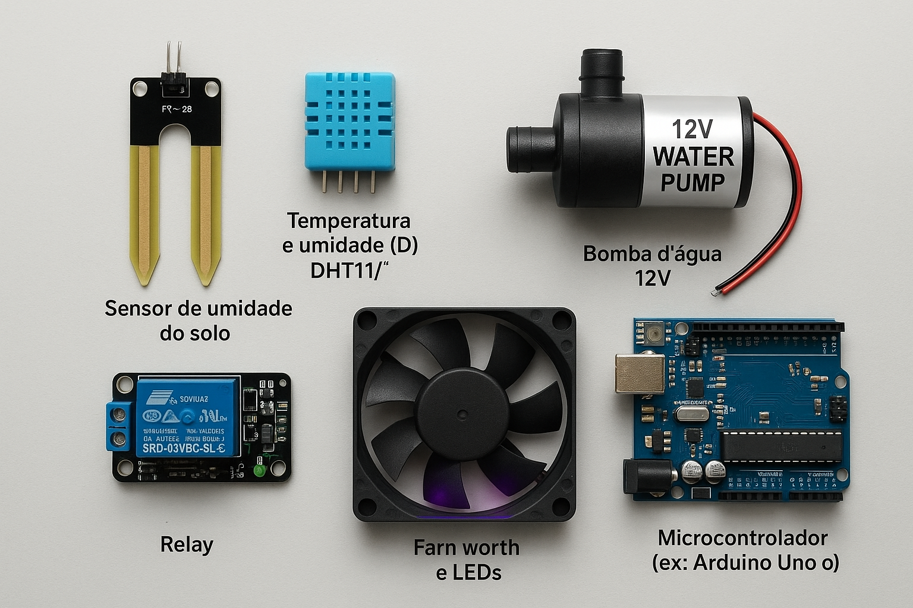

Componentes Principais
- Sensor de umidade do solo
- Sensor de temperatura e umidade (DHT11/DHT22)
- Bomba d’água 12V
- Módulo relé
- Ventoinha e LEDs de crescimento
- Microcontrolador (ex: Arduino Uno ou ESP32)
Funções
Sensor de Umidade do Solo
-
Esse sensor mede a quantidade de água presente na terra. Quando o solo está seco, ele envia um sinal para o
sistema, indicando que as plantas precisam ser irrigadas.
Bomba d’água e Módulo Relé
-
O módulo relé funciona como um interruptor controlado pelo microcontrolador. Quando o sensor de umidade
detecta que o solo está seco, o relé ativa a bomba d’água, que realiza a irrigação de forma automática e
precisa.
Ventoinha
-
A ventoinha é responsável por controlar a temperatura e a circulação de ar dentro da estufa. Ela ajuda a
evitar o superaquecimento e mantém o ambiente agradável para o crescimento das plantas.
LEDs de Crescimento
-
Os LEDs de crescimento fornecem a iluminação necessária para as plantas realizarem a fotossíntese, garantindo
o desenvolvimento saudável mesmo em locais com pouca luz natural.
Microcontrolador (Arduino Uno ou ESP32)
-
O microcontrolador é o “cérebro” da estufa. Ele recebe os dados do sensor de umidade e decide automaticamente
quando acionar a bomba d’água, a ventoinha e os LEDs, mantendo o equilíbrio ideal para as plantas.
Software
Códigos da lógica de Controle
Hospedagens web
- Banco de dados: Railway
- API: Render(APP) e Vercel(WEB)